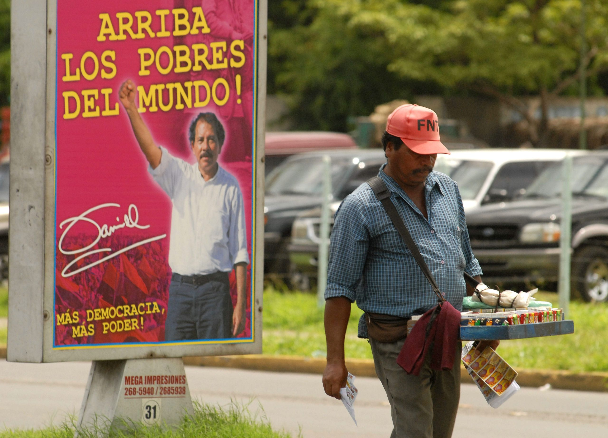

Programa de gobierno
Plan de desarrollo humano
El Gobierno de Reconciliación y Unidad Nacional tiene como propósito superar la pobreza y transformar a Nicaragua mediante la construcción de un modelo alternativo de desarrollo más justo y una nueva estructura del poder más democrática. Esto requiere la democratización del poder, de la cultura, de las relaciones sociales, del desarrollo económico y del cuidado del medio ambiente.
El Gobierno trabaja junto al pueblo la reconstrucción de la Nicaragua del nuevo milenio, con un claro sentido de resolver conjuntamente los problemas que históricamente ha padecido el pueblo nicaragüense, haciendo realidades las iniciativas ciudadanas y encaminando al país hacia una visión de largo plazo por medio de la ejecución de una estrategia de desarrollo económico y de reducción de la pobreza apropiada. Por ello, el Plan Nacional de Desarrollo Humano (PNDH), está abierto a las adecuaciones que los nuevos acontecimientos demanden para el bienestar del país. Un Plan que fue construido desde y para los ciudadanos (as), armonizado con los planes sectoriales, departamentales, municipales, e institucionales, así como el apoyo de la Comunidad Cooperante, alineada y armonizada a las prioridades nacionales.
El Plan Nacional de Desarrollo Humano (PNDH) contiene un nuevo enfoque en la lucha contra el hambre y la pobreza, que en su esencia busca capitalizar las capacidades de la población empobrecida con el fin de que participen como actores activos en la solución a los problemas sustantivos y contribuyan al desarrollo del país. Esto requiere de un enfoque de políticas públicas más activo y productivo hacia y desde la participación directa de la población empobrecida, dejando a un lado las políticas asistencialistas en la inversión hacia los pobres Con el fin de hacer esto posible, se cambia la lógica neoliberal de provisión de servicios como una mercancía por el establecimiento de derechos de salud y educación pública gratuitas, revisión estructural de la inversión con el propósito de desarrollar infraestructura que contribuya a aumentar la competitividad de la economía y el aumento de la inversión privada.

Se impulsa un modelo alternativo de desarrollo, de reconciliación y unidad nacional que promueva la inclusión del pueblo en el proceso de desarrollo como constructor y beneficiario directo del mismo, reconociendo el derecho de todas y todos, a la supervivencia de la especie y a la realización humana. En este modelo del Poder Ciudadano, se está trabajando a todos los niveles en impulsar los valores en la sociedad basados en la fe, en la confianza, en la familia, en la comunidad, en los valores éticos y morales, el valor de la palabra como compromiso, acción y voluntad de cumplimiento. Trabajando para pasar de la democracia en conflictos a la democracia del consenso y de la participación directa, basada en la reconciliación, la consulta previa en la toma de decisión, pero principalmente impulsando la participación plena de la población en los Consejos de Poder Ciudadano, a fin de que la ciudadanía tenga poder de decisión no solo en las elecciones sino también en forma permanente en todos los aspectos locales y nacionales que incide en sus vidas.
El GRUN está comprometido con la estabilidad macroeconómica, pero no a costa del gasto social, sino fomentando una economía más humana, solidaria, equitativa, justa, y sobre todo dirigida al beneficio de la población empobrecida del país, manteniendo una tasa de inflación baja; logrando un crecimiento sostenido que genere empleos de calidad; con políticas públicas que contribuyan a mejorar la distribución del ingreso; incentivando la inversión privada para capitalizar el potencial sectorial del país de manera apropiada; y motivando a la cooperación internacional para que apoye el Plan Nacional de Desarrollo Humano (PNDH).